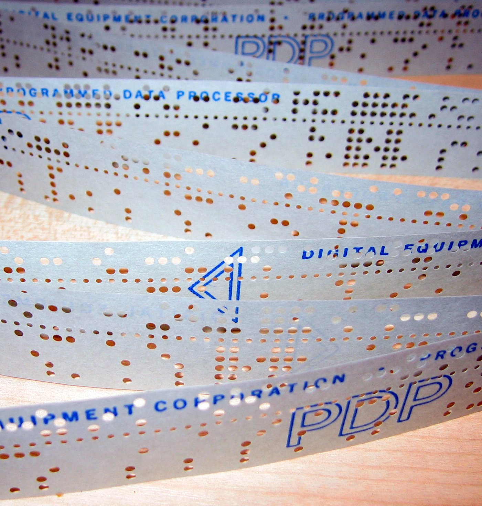
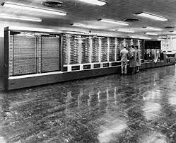
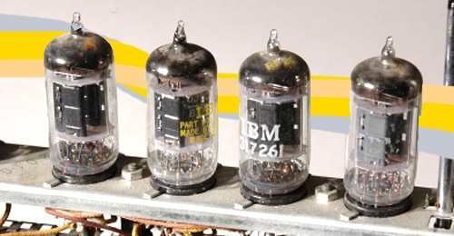
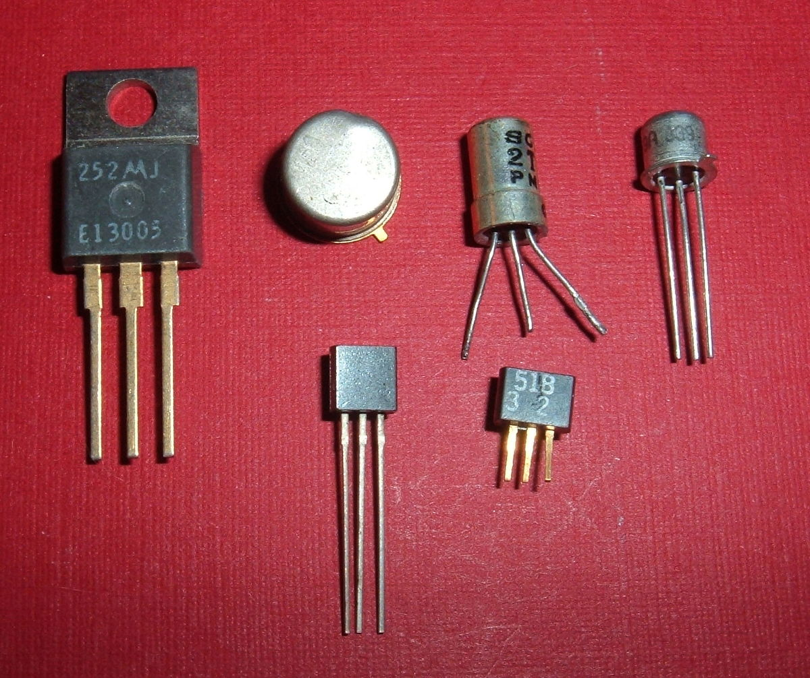

.jpg) Image eniac
Image eniacLe mot informatique a été créé en 1962 par Philippe Dreyfus. Il s’agit d’un néologisme de la langue française fait de la contraction des deux mots “automatique” et “information”. Pour parler du traitement automatique de l’information, les anglo-saxons utilisent les termes de “computer science” ou de “data-processing”.L’informatique, comme discipline scientifique et technique, s’est déployée sur deux siècles environs : 19ème et 20ème siècle.Elle est liée à l’apparition des premiers automates et à la mécanisation : un processus de développement et de généralisation des machines qui a commencé au 18ème siècle en Europe avec l’industrialisation.
| invention important | inventeur | date de l'invention |
|---|---|---|
| La création des premiers ordinateurs | Charles Babbage | 1821 |
| Le premier programme informatique | Ada Lovelace | 1843 |
| Invention du premier ordinateur programmable | Konrad Zuse | 1941 |
| premier ordinateur électronique programmable | Tommy Flowers | 1943 |
| Premier ordinateur électronique programmable à usage général | John Mauchly et J. Presper Eckert | 1946 |
| Premier ordinateur à programme enregistré | Frederic C. Williams et Tom Kilburn | 1948 |
| Création du premier compilateur | Grace Hopper | 1952 |
| Premier ordinateur à affichage graphique en temps réel | IBM | 1951 |
SOMMAIRE:
I) Histoire des ordinateurs: L'évolution des machines
1) Les Machines électromécaniques
2) Les Machines électroniques
3) Les Machines à programmes enregistrés
4) Miniaturisation
II) Histoire du langage informatique et des systèmes d'exploitation
1) langage de programmation
2) Les systèmes d'exploitation
I) Histoire des ordinateurs: L'évolution des machines
1) Les Machines électromécaniques
L'allemand Konrad Zuse achève le Z1 en 1938, un ordinateur mécanique en binaire, puis le Z3 en 1941 qui lisait son programme sur une bande perforée.
 IMAGE D'UNE BANDE PERFORER
En 1944, L'américain Howard H . Aiken construit l'ordinateur électromécanique Mark I qui pesait 5 tonnes.
 IMAGE DU Mark I
2)Les Machines électroniques
L'apparition des tubes à vides marque le début de l'électronique. John Vincent Atanasoff en 1942 construit la première machine électronique sans l'achever complètement.
 Image tubes a vides
Entre 1943 et 1945 Max Newmann et Tomy Flowers utilisent les premiers ordinateurs à tubes à vides nommés Colossus pour déchiffrer le code de Lorenz employé par les Allemands. Le premier, Colossus Mark 1, est construit en l’espace de onze mois et opérationnel en décembre 1943, constitué de 1 500, puis 2 400 tubes à vide, il accomplissait 5 000 opérations par seconde.Plus rapide, le Colossus Mark II servit notamment pour le lancement surprise du Débarquement. Le célèbre ENIAC (acronyme de l'expression anglaise Electronic Numerical Integrator And Computer) de John W. Mauchly et J. presper Eckert est achevé en 1945 et permet avec ses 18 000 tubes à vide d'effectuer des calculs balistiques. Son poids est de 30 tonnes pour des dimensions de 2,4 x 0,9 x 30,5 mètres occupant une surface de 167 mètres carrés (1 800 pieds carrés).
Image eniac
3) Les Machines à programmes enregistrés
En 1948 apparaissent les premières machines à programmes enregistrés, ancêtres directs des ordinateurs actuels. Les données et programmes résident en mémoire. Ces machines sont basés sur les travaux de Mauchly, Eckert et von Neumann. Au début des années 1950 apparaisent les premiers ordinateurs commerciaux avec IBM, DEC et Bull .
4) Miniaturisation
Le transistor apparaît en 1947 à la place des tubes à vide et on commence à le fabriquer à faible coût au milieu des années 1950.
 Image de transistor
Le circuit intégré apparaît en 1958. En 1971 le premier microprocesseur voit le jour, c'est l'Intel 4001. L'informatique s'ouvre alors aux particuliers. De multiples machines sont commercialisées : l'Altair 8008, l'Apple II (1977), l'IBM PC (1981), le ZX 81 (1981), le commodore 64 (1982), le Macintosh (1984) ... Le ZX 81 est considéré à son époque comme le premier ordinateur familial en kit en France, sa résolution et sa capacité mémoire (1 ko) ne permettait pas énormément de prouesses au niveau des jeux.
II) Histoire du langage informatique et des systèmes d'exploitation
1) langage de programmation
Un langage de programmation est un langage informatique, permettant à un être humain d'écrire un code source qui sera analysé par une machine, généralement un ordinateur. Le code source subit ensuite une transformation ou une évaluation dans une forme exploitable par la machine, ce qui permet d'obtenir un programme. Les langages permettent souvent de faire abstraction des mécanismes de bas niveau de la machine, de sorte que le code source représentant une solution puisse être écrit et compris par un être humain.
Après le premier compilateur conçu en 1951 par Grace Hopper, le langage Fortran est spécifié en 1954 et achevé en 1956 par John Backus. C'est le premier langage dit de haut niveau. Il est utilisé pour le calcul scientifique, encore de nos jours.
Suivent ensuite : le Lisp, le Cobol et le Basic en 1964. Puis de 1970 à 1980 : le C (1972), le ML (1973) dont est issu Caml, Ada (1983) et C++ (1986). La première version de Python date de 1991 (Guido van Rossum) et JavaScript a été publié en 1995.
Les languages les plus connue sont le Python, le Java et le JavaScript
Tout les languages de programmation. :ici
2) Les systèmes d'exploitation
Un système d'exploitation, ou logiciel système, ou Operating System (OS), est un logiciel qui, dans un appareil électronique, pilote les dispositifs matériels et reçoit des instructions de l'utilisateur ou d'autres logiciels (ou applications). Ces logiciels doivent être adaptés à un système d'exploitation.
Un système d'exploitation, ou logiciel système, ou Operating System (OS), est un logiciel qui, dans un appareil électronique, pilote les dispositifs matériels et reçoit des instructions de l'utilisateur ou d'autres logiciels (ou applications). Ces logiciels doivent être adaptés à un système d'exploitation.
Dans un ordinateur, le système d'exploitation gère le ou les processeurs ainsi que la mémoire. Il fait fonctionner les périphériques (clavier, souris, surface tactile, écran, disque dur, ...). Dans un appareil photo, il fait fonctionner les différents mécanismes, gère l'affichage de l'écran et détecte les actions de l'utilisateur. Etc.
Les systèmes d'exploitation comportent aussi l'interface avec l'utilisateur. Dans un ordinateur, par exemple, c'est lui qui affichera les fenêtres et présentera le contenu des unités de stockage (disque dur, CD, DVD...).
Au milieu des années 1960, chaque constructeur développe son propre système d'exploitation : OS/360, puis MSV chez IBM, système Unix (1970) chez AT&T (Bell ...) MS-DOS écrit par Microsoft pour IBM s'impose. Il est suivi par Windows en 1985. En 1984 Richard Stallman débute la création du système GNU et promeut le mouvement du logiciel libre.
Le 27 septembre 1983, Richard Stallman dévoile son projet de développer un système d’exploitation compatible UNIX appelé GNU qui signifie en anglais « GNU’s Not UNIX » (littéralement, « GNU n’est pas UNIX ») , en invitant la communauté hacker à le rejoindre et participer à son développement.
| Lien | |
|---|---|
| Les grande parties et sous partie | https://moodle.monlycee.net/pluginfile.php/24423/mod_page/content/1/1_Histoire.html?time=1618578543908 |
| Date,inventeur et invention les plus importante | https://www.superprof.fr/blog/grandes-idees-programmeurs/ |
| Introduction | https://archinfo01.hypotheses.org/770 |
| Les sous partie | https://www.techno-science.net/glossaire-definition/Langage-de-programmation.html |